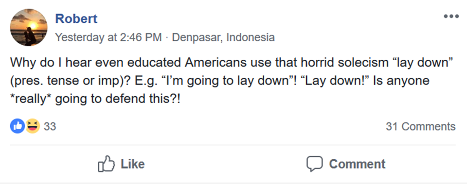

Having done some brainstorming about grammar in the previous section, now we will look at what
linguists mean when they talk about "grammar". First read the short chapter below. When you are reading it,
think about how it relates to the examples and statements about "grammar" that you made in the previous activity.
Once you have finished, continue on to the activities below.
Reading: Chapter 1 (pp. 1-11) of Akmajian, Adrian, et al. Linguistics: An Introduction to Language
and Communication, MIT Press, 2010. (This could be replaced with pretty much any introductory reading that
discusses the difference between prescriptive and descriptive grammar. A good free alternative is Essentials
of Linguistics chapter 1.1, "Linguistics
is science.")
Think about the chapter you just read, and think about what you said about grammar in the previous activity
(including the "bad grammar" examples you gave, and/or your judgments about the "We hiring" and "We be hirin"
examples).
Is there any difference between the way that you were thinking and talking about "grammar" in the previous
activity, and the way linguists define "grammar" (as described in the chapter you read)? If so, what's
the difference?
There are two popular ideas about "grammar" that don't match the way linguists understand grammar.
First, most people think of "grammar" as something related to sentences and words. In the first activity of this
module, where I asked you to give examples of bad grammar, most people's bad grammar examples tend to be
related to things like that (for example, using a wrong suffix on an English word, saying a Chinese sentence
with words in the wrong order, etc.).
Secondly, most people also think of "grammar" as being something that has right and wrong answers. In other words,
some sentences are "good grammar" and some are "bad grammar".
In linguistics, however, both of the above ideas about grammar are wrong. First of all, grammar is not just
a property of sentence structures. Secondly, in linguistics, there is no such thing as "bad grammar".
Why do think I say that? Based on the chapter you read, why is "grammar" something that is not only about
sentence structures? And, based on the chapter you read, why is there no such thing as "bad grammar"?
Grammar is a system of rules/procedures that can create language. If you have some thought that you wish to
express, then you follow a mental system of rules and procedures to turn that thought into language and say
it. Likewise, if you hear or read someone say language, you follow rules and procedures to turn those sounds
into an idea in your head. You can think of it like baking a cake: if you want to bake a cake, you can follow
a set of instructions (maybe written down in a recipe, or maybe something you have memorized) that let you
start with some ingredients and turn those ingredients into cake. Grammar is the system of instructions that
turns ideas into language (or language into ideas). Different people might start with the same ingredients
but follow different instructions to make a different cake; likewise, different people might start with the
same idea but follow different grammar instructions to turn that idea into different sentences in different
languages.
Thinking about grammar in this way helps show why grammar is not only about things like sentences, word order,
suffixes, etc. Grammar is all the rules and procedures that you use to make language -- that includes things
such as rules for how sounds go together. Sometimes people think "grammar" just means the particular rules
about suffixes in Indo-European languages (for example, you have to change the verb endings to match the
subject—in English we say "I kick" but "he kicks"), and hence people sometimes say things like
"中文沒有語法！" ("Chinese doesn't have grammar!") because Chinese
doesn't have that particular set of rules about verb endings. From a linguistic perspective, though, this is
incorrect: of course Chinese has grammar, because someone who speaks Chinese follows certain rules and
procedures to determine how to turn an idea into a piece of Chinese language (Chinese speakers don't just
randomly put random sounds together).
Likewise, there is no such thing as "bad grammar", and there's no such thing as a person who "doesn't know
grammar". When people speak or write, they aren't just acting randomly; they are following some set of
rules that exist in their mind. Those rules might be different than the "official" rules of the language
that are taught in school, but they're still rules. In school we tend to learn a certain version of our
language, called the prestige variety—this is the version of the language that is most
respected in society (e.g., the version of the language that you are usually expected to speak if you go on
a job interview, meet an important person, etc.). But the prestige variety is only one version of the
language. People who speak the language in a different way are not using "bad grammar", they're just using
a different grammar (a different set of rules) which is not the same as the grammar of the prestige variety.
Think about the language you speak. What is the prestige variety? (Hint: "Mandarin" and "Cantonese"
are not 'dialects', they are languages; Mandarin and Cantonese are as different from each other as French and
Spanish are. If you are in mainland China, your prestige variety is not just "Mandarin"; there are lots of
different versions of Mandarin, and there are lots of people who speak a version of Mandarin but say that
their own Mandarin is 不标准 ("not standard"). Likewise, if you are in Hong Kong, your
prestige variety is not just "Cantonese"; there are different versions of Cantonese, more formal and less
formal.) Are there any differences between the prestige version of your language and the version that
you speak? (I can give an example for myself: I am American, and the prestige variety of American
English is something called "General American" or "Standard American English", which is what we are taught
in school. The way I speak English is pretty similar to this, but there are some differences; I pronounce
some words differently than the standard pronunciation, and I say some things like "The grass needs cut",
which are not said in Standard American English [in Standard American English people say "The grass needs
to be cut" or "The grass needs cutting"]. Many people from my region also say things like
"There are a lot of people studying Chinese anymore", which is not grammatical in Standard American English
but is grammatical in the version of English from my region.)
What makes one variety of language a "prestige variety"? Some people think that
version of language is inherently better—i.e., some people think that standard Mandarin is more "logical"
than other local dialects of Mandarin, some people think British Received Pronunciation is clearer and more
expressive than other varieties of British English, etc. This, however, is false. We can actually find plenty
of examples of things that non-standard dialects do better than the standard variety. For example, think back
to the "We hiring" / "We be hiring" example you examined in the first activity of this module. "We hiring" and
"We be hiring" are both ungrammatical in standard American English; in standard American English we would say
"We are hiring" or "We're hiring". But these are common grammatical structures in African American English
(also called African American Vernacular English or Black English), and they have different meanings. Read
the short blog post "Habitual Hiring"
by Taylor Jones to understand how these two sentences are different.
As you can see from the explanation in the blog post, these mean different things: "We hiring" means
"We are hiring right now", whereas "We be hiring" means "we regularly/often hire" but does not
necessarily mean they are hiring right now (maybe they just put up the sign to show that they are helping
their community by hiring people often). This is a distinction that is not easy to express succinctly in
Standard American English. Standard American English has no simple way to express this (we can only express
it through a long and complicated sentence, like the way I explained it just above), whereas African American
English has a clear and built-in way to express it.
This shows that there is no inherent linguistic reason why Standard American English is better than other kinds
of English. The reason it has become the "prestige variety" is purely sociological and historical: the people
who had the most power in society spoke that version, so they started to push everyone else to speak it too (plus
they killed a lot of people who spoke other varieties of English). That doesn't mean it's better.
Thinking about your own language, can you think of anything that's expressed more clearly, more logically,
more creatively, etc., in a non-standard variety than in the prestige variety?
What we see from the above discussion is that every person who speaks a language is using a grammar, and no
grammar is better than any other; grammars are just different. There is no "bad grammar".
Linguistics is about understanding and describing how grammars work, not about judging whose grammar is better
or worse. You can think of linguistics like other sciences, such geology. Imagine you are a geologist and you
look at lots of different rocks (such as the examples pictured below, from this website). If someone asks you
to describe the similarities and differences between the different rocks, there are a lot of features you could
describe. You might say this rock is bigger and that one is smaller; this rock is darker and that rock is lighter;
this rock is smooth and that rock is bumpy; this rock is heavy and that rock is light, etc. But I'm sure you
would not say "this is a good rock and that's a bad rock". Likewise for languages: when we do linguistics, we
are aiming to describe the properties of a person's language, not to call someone's language good or bad.
Language teachers sometimes don't like when I describe language this way. After all, if you are teaching language,
you want your students to be able to communicate with others. And if students speak language following their own
grammar rather than the standard grammar, they won't be able to communicate. Thus, as a language teacher, maybe
you do need to tell students what is "right" and "wrong", so they can communicate. That is true, but keep in
mind that what you are telling students is what is "right" and "wrong" in a particular grammar—in
other words, you are telling them something like, "If you want to speak Standard Mandarin and communicate with
other people who speak Standard Mandarin, you have to follow this rule". That doesn't mean that their other way
of speaking is wrong, bad, or ungrammatical; it just means their other way of speaking is different from
Standard Mandarin.
To understand this, you can think about games such as 麻將 (mah jong) or basketball. Both of these
games have many different sets of rules. 麻將 played in different regions or with different groups
of people has different sets of rules. Likewise, NBA basketball is different from college basketball, and both
are different from half-court street basketball. Now imagine you start to play basketball with people who are
playing NBA-style basketball rules, and you do something that's allowed in street basketball but not allowed in NBA
basketball. They will say you are breaking the rules, and they will be correct, because they already agreed the
game would use NBA rules. However, this does not mean that you're not playing basketball; it just means you're
playing with the wrong set of rules for that situation. Language works the same way: if you go to a particular
context where a certain set of language rules is expected (for example, a job interview where people expect
Standard American English), you might get punished if you use a different set of language rules (e.g., if you
start speaking Russian instead). This does not mean that your language is ungrammatical, though; your language
is still following grammar rules, just not the grammar rules that you were expected to use in that situation.
Above, I just provided two analogies about language and communication (language rules are like 麻將
rules, language rules are like basketball rules). Can you think of any other analogies to illustrate what we've
learned so far about language and communication?
Related to the concepts discussed in the previous questions is the distinction between prescriptive rules
and descriptive rules. You read about this in the chapter at the beginning of this activity.
Prescriptive rules are something that authority figures tell you about how you "should" use language, and
these are not what linguists care about. Descriptive rules are the rules that exist in your own mind that
tell you how you can turn an idea into a piece of language.
Here's an example of a common prescriptive rule of English: people often say it's wrong to say "lay down"
instead of "lie down":

This is prescriptive because it's not attempting to describe how people really use language; it's trying
to tell people that their way of using language is wrong.
Below are a few examples of descriptive rules.
In casual English, we often say "gonna" instead of "going to". For example, "I'm going to have lunch" can be changed
into "I'm gonna have lunch". So, you might assume that "gonna" is simply a shorter, more casual version
of "going to". But not every "going to" can be changed into "gonna". Consider the following examples:
I'm going to the store. / *I'm gonna the store.
I might be going to visit Guangzhou next week. / *I might be gonna visit Guangzhou next week.
Native speakers of English, like me, never learned in schoolbooks the "proper" way to use "gonna"; we were just told that
"gonna" is bad grammar and we shouldn't say it. Nevertheless, we all somehow know that "I'm gonna have lunch"
sounds ok and "I'm gonna the store" sounds wrong. In other words, the grammar system in our mind includes
rules about how "gonna" can and cannot be used. These are not rules we learned from a school or from a book;
they're rules we just know, as part of our language knowledge. (In the chapter you read at the beginning of this
activity, this language knowledge is called our competence.) This is a kind of descriptive rule: it's a real
description of how our language system works, and it didn't need to be forced on us by an authority figure.
English speakers can put -fucking- inside another word to emphasize it. For example, instead of saying
"I absolutely love that movie", we can say "I abso-fucking-lutely love that movie!" (This works with other
words, too, like -flipping-, so if you don't like swear words, you can try this with less offensive
words like "abso-flipping-lutely" instead.) According to my understanding, this is also common in Cantonese;
for example, in Cantonese we can put 九 inside another word.
This pattern also follows rules. If you ask any American English speaker, they will say that "abso-fucking-lutely"
sounds normal and "ab-fucking-solutely" sounds weird. You can do this with any word; if you ask an American
English speaker to put "-fucking-" inside of "Philadelphia", I am sure they will say "Phila-fucking-delphia",
not "Phil-fucking-adelphia". (For a challenge, you can try to figure out why this is; we will also return to this
issue when we discuss phonology in a later module.)
Our school textbooks certainly did not teach us the rules for how to use "-fucking-". These rules are just
something we know, as speakers of the language.
Try to think of an example (something you see online, or just something you remember) of a prescriptive rule (in
any language), and an example of a descriptive rule. Write your rules below.
When you have finished these activities, continue to the next section of the module:
"Grammar in the real world".